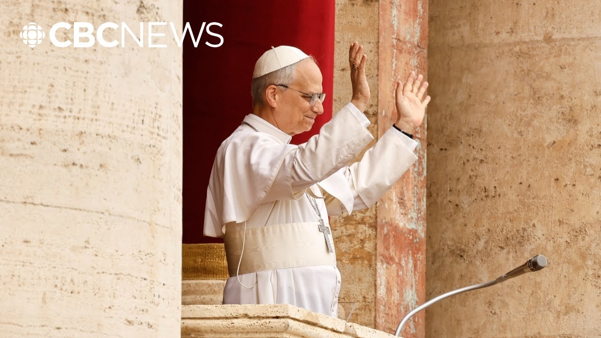

【教皇利奥十四世在首次周日讲话中呼吁结束一切战争】
Summary: Today, Leo I 14th held his first Sunday mass since becoming pope, and global conflicts were on the mind of the new head of the Catholic Church.
摘要： 今天，利奥十四世在成为教皇后首次主持周日弥撒，全球冲突是这位天主教新领袖的关注焦点。

⏱️ Estimated Reading Time: 2 min
Today, Leo I 14th held his first Sunday mass since becoming pope, and global conflicts were on the mind of the new head of the Catholic Church.
今天，利奥十四世在成为教皇后首次主持周日弥撒，全球冲突是这位天主教新领袖的关注焦点。
The Pope asked world leaders to work towards lasting peace while reflecting on regions like Gaza, South Asia, and Ukraine.
教皇呼吁世界各国领导人努力实现持久和平，同时关注加沙、南亚和乌克兰等地区。
The CBC's Megan Williams is in Vatican City, and has more on the pontiff's prayers.
加拿大广播公司的梅根·威廉姆斯在梵蒂冈城，为您带来更多关于教皇祈祷的报道。
So, massive crowds this morning in and around St. Peter's Square.
今天上午，圣彼得广场内外人山人海。
Local authorities say there were 100,000 people to get that first glimpse of Pope Leo from his balcony giving his first Sunday evangelist.
当地当局称，有10万人首次在阳台上目睹教皇利奥发表首次周日福音讲话。
This is a message about a range of issues and often touches upon political issues.
这是一条涉及一系列问题的信息，常常触及政治议题。
Uh today was the prayer day, the Vatican prayer day for for um priests and nuns and young people considering entering the priesthood or um vocations, what the Vatican calls vocations.
今天是祈祷日，梵蒂冈为神父、修女以及考虑进入神职或圣召的年轻人设立的祈祷日。
and he urged communities around the world to offer them support and he gave a political message.
他敦促全球社区为他们提供支持，并传达了一条政治信息。
The first and foremost was no more war.
首要信息是停止战争。
He borrowed language from Pope Francis in talking about the world undergoing now what he called a peace meal world war III.
他借用了教皇方济各的表述，称世界正在经历一场“零碎化的第三次世界大战”。
Uh he spoke in favor of a a a lasting uh truce in Ukraine.
他支持在乌克兰实现持久停火。
uh he spoke in favor of more humanitarian aid for the people of Gaza who are suffering terribly for the release of the Israeli hostages and also supporting the truce between Pakistan and India.
他主张为加沙遭受苦难的民众提供更多人